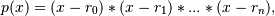
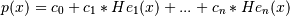

numpy.polynomial.hermite_e.hermefromroots¶
- numpy.polynomial.hermite_e.hermefromroots(roots)[source]¶
Generate a HermiteE series with given roots.
The function returns the coefficients of the polynomial

in HermiteE form, where the r_n are the roots specified in roots. If a zero has multiplicity n, then it must appear in roots n times. For instance, if 2 is a root of multiplicity three and 3 is a root of multiplicity 2, then roots looks something like [2, 2, 2, 3, 3]. The roots can appear in any order.
If the returned coefficients are c, then

The coefficient of the last term is not generally 1 for monic polynomials in HermiteE form.
Parameters : roots : array_like
Sequence containing the roots.
Returns : out : ndarray
1-D array of coefficients. If all roots are real then out is a real array, if some of the roots are complex, then out is complex even if all the coefficients in the result are real (see Examples below).
See also
polyfromroots, legfromroots, lagfromroots, hermfromroots, chebfromroots.
Examples
>>> from numpy.polynomial.hermite_e import hermefromroots, hermeval >>> coef = hermefromroots((-1, 0, 1)) >>> hermeval((-1, 0, 1), coef) array([ 0., 0., 0.]) >>> coef = hermefromroots((-1j, 1j)) >>> hermeval((-1j, 1j), coef) array([ 0.+0.j, 0.+0.j])